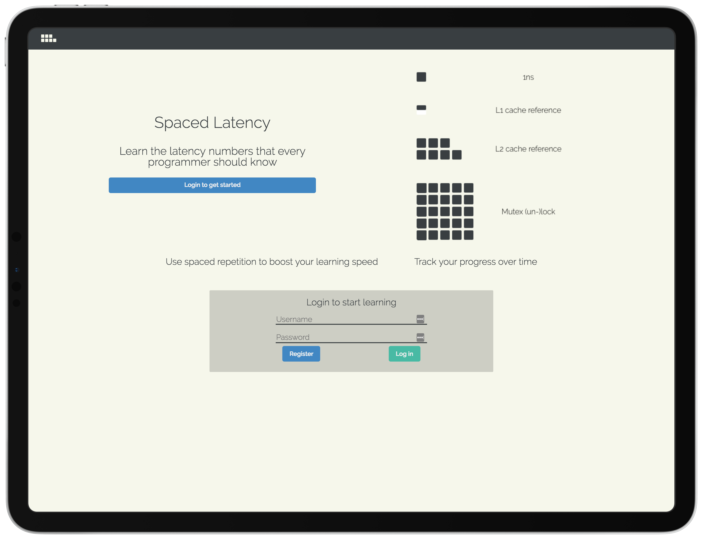

Learn the latency numbers every programmer should know
While studying for a system design interview I came across the latency numbers every programmer should know. Spaced Latency helps you to memorize them efficiently using the "spaced repetition" technique.